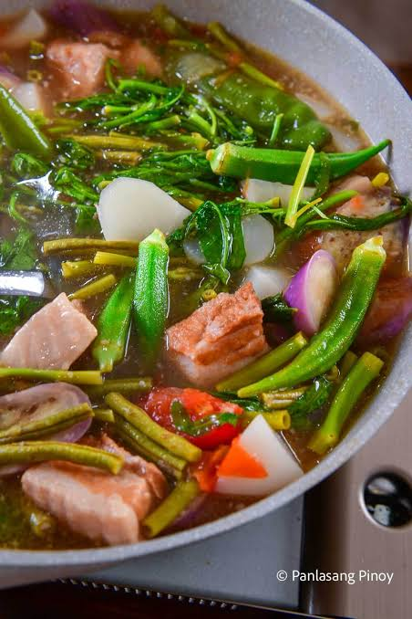

Sinigang Recipe

Sinigang na Baboy
This sinigang na baboy recipe uses the rich flavors of pork ribs and tamarind to create a lip-smacking experience.
Try this classic take for your next meal.
Ingredients
- 4¼ cups water
- 2 cups pork spare rib cut into chunks
- 1 pc red onion, quartered
- 2 pcs medium sized tomato, quartered
- 8 pcs sitaw, sliced into 2” pieces
- 250 g kangkong stalk and leaves
- 1 pc talong, sliced
- 2 pcs siling pangsigang
- 1 (20g) pack Knorr Sinigang sa Sampalok Mix Original
- Optional: labanos, okra
Directions
- Begin by washing pork spare ribs in cold running water to remove any visible impurities. Then, place pork ribs submerge in a medium pot with a liter of water. Bring to a boil without covering the pot and allow the scum to float to the surface. Meticulously remove the scums from the surface of the water using a slotted spoon or a spatula. Scums are impurities found in meat.
- After the broth clears up, turn you heat to medium setting, then it’s time toss in your onions and tomatoes to add flavor to the broth. Cover your pot and let it simmer to fully cook your meat. Use a fork to pierce the meat so that the flavors would also enter the meaty parts of the spare ribs, You also do this so you can tell if it’s already set and tender.
- You can already add your vegetables. Start by adding the sitaw, kangkong stalks and talong into the pot and cook until these turn dark green. If you decide to use labanos and okra, you can also add those at this point. This should take roughly around 2-3 minutes.
- Add in your siling sigang, kangkong leaves and the Knorr Sinigang sa Sampaloc Mix. Stir and let it simmer. It should be done in about 2-3 minutes.